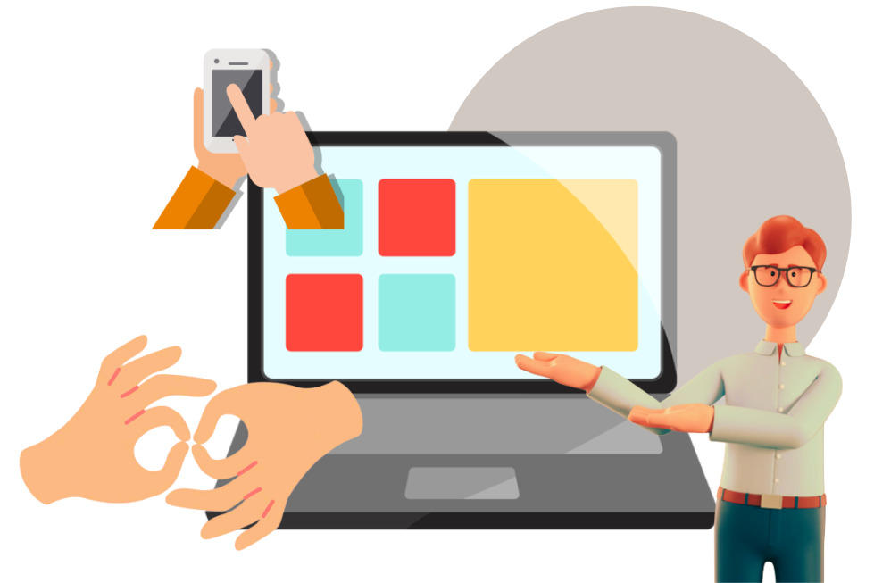

En la Plataforma de Comunicación Inclusiva (PCI), somos más que una startup, somos una comunidad dedicada a transformar la forma en que el mundo se comunica. Nuestro enfoque es claro: hacer que la comunicación sea accesible para todos, celebrando la diversidad en cada palabra, gesto y sonrisa. Nuestro objetivo es derribar barreras y crear un espacio donde todas las voces tengan cabida, independientemente de cómo elijas comunicarte. En PCI, estamos impulsados por la pasión por la inclusión y la creencia en un mundo donde la comunicación no tiene límites. Únete a nosotros en este apasionante viaje hacia una comunicación verdaderamente inclusiva.
Nuestra aplicación en la Plataforma de Comunicación Inclusiva (PCI) es tu puerta de entrada a un mundo de comunicación accesible y diversa. Con herramientas de traducción de lenguaje de señas en tiempo real, lecciones interactivas de lenguaje de señas y un enfoque en la inclusión, nuestra aplicación te empodera para comunicarte de manera efectiva, sin importar cómo elijas expresarte. Rompe barreras, crea conexiones y descubre un nuevo nivel de comunicación con PCI.
Descargar la aplicación PCI es sencillo y rápido. Dentro de nuestra página web oficial desde tu dispositivo móvil o tableta, encontrarás enlaces directos a las tiendas de aplicaciones App Store y Google Play. Haz clic en el enlace correspondiente a tu plataforma y sigue las instrucciones para la descarga. En cuestión de minutos, estarás listo para unirte a nuestra comunidad de comunicación inclusiva. ¡Descarga ahora y comienza a comunicarte sin barreras con PCI!
En nuestro blog, explorarás artículos y recursos relacionados con la comunicación inclusiva, consejos útiles sobre cómo mejorar la comunicación y experiencias inspiradoras de personas que han transformado sus vidas a través de la Plataforma de Comunicación Inclusiva (PCI). Sumérgete en historias, consejos y novedades que te ayudarán a aprovechar al máximo tu experiencia con PCI. ¡Visita nuestro blog y mantente al día con todo lo relacionado con la comunicación inclusiva!
Inclusión como pilar de la sociedad
Álvaro de la peña - Joven de 45 años con sordera
La IA como revoluciona la industria